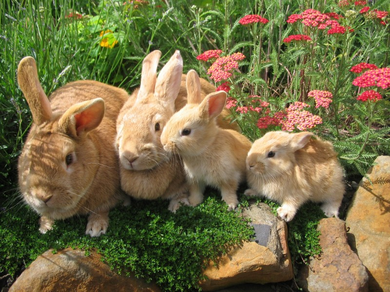
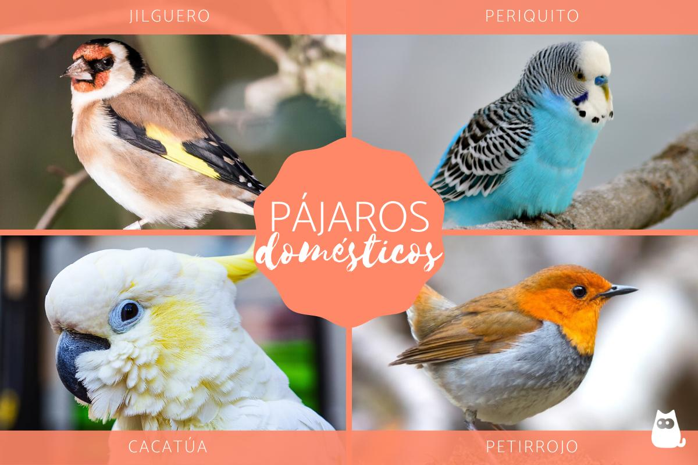

Conejos
Los conejos llevan con nosotros siglos, siendo una de las especies de mamíferos más extendida. Al ser animales que conviven muy bien con los humanos, son agradables, bonitos y además no suponen un riesgo para las personas, se empezó a generalizar sobre todo en Estados Unidos o Dinamarca tener uno de estos animales como mascotas, ya que no suponían demasiados cuidados, ya que eran fáciles de cuidar, necesitaban poco espacio y no tenían que sacarse a la calle diariamente. Todo esto y otros factores han hecho que cada día más personas se decanten por ese tipo de mascotas y no por otra.
Los conejos son mamíferos roedores, es decir comparten grupo con animales como el castor, la ardilla, o la rata, entre otros, por lo que una de sus características principales es que va a tener unos incisivos bastante grandes, que utilizará para roer el alimento u otro tipo de materiales. Por otro lado, también identificaremos a un conejo por otra de sus partes más importantes: las orejas. Las orejas de los conejos son bastante grandes, saliendo de la parte superior de sus cabezas y pudiendo llegar a medir más de la mitad de la longitud de su cabeza.
El resto del cuerpo suele ser redondeado, con unas patas traseras mucho mayores que las delanteras, las cuales le van a ayudar a ponerse en pie para llegar a frutos que se encuentren a mayor altura, o para impulsarse cuando está corriendo o va a saltar. Otra de sus características es su pequeña Cola, la cual parece un pompón.
Pájaros
Pájaros como los loros o los periquitos son otras de las mascotas más comunes. En el caso de los loros, suele ser un divertido animal de compañía para muchos jóvenes y adultos. Los hogares en los que hay loros deben conseguir una temperatura ideal para que esta ave se sienta como en casa. La domesticación de los loros es sencilla y se convierten en un animal de compañía ideal.
Tanto los loros como los periquitos contarán con sus jaulas específicas, en las que tendrán espacio suficiente para moverse y revolotear. Sobre todo, en el caso de los periquitos es importante que estos animales se sientan libres para mover sus alas y dar riendas sueltas a sus cantos.
Por otro lado, debes estar muy concienciado de que tener una mascota no es un hobby, ya que no son juguetes que podamos echar de casa cuando nos hayamos aburrido. Son seres vivos sensibles que merecen ser queridos y cuidados por sus dueños. En la actualidad, existen más de 300 especies perfectamente adaptadas a la vida en libertad. Por eso, antes de comprar un ave en concreto, debemos saber cuáles son sus necesidades para garantizar su bienestar teniendo en cuenta factores como su tamaño y el espacio que tenemos disponible, su nivel de socialización y domesticación, nuestra experiencia en el cuidado de aves y la esperanza de vida de la especie. Esto último es muy importante, ya que mientras un canario puede durar unos 15 años, los loros pueden vivir hasta 50 años. Además, debes saber que hay aves que son muy sociables y que disfrutan viviendo en pareja, como es el caso del periquito, el agaporni, el diamante mandarín o el loro.